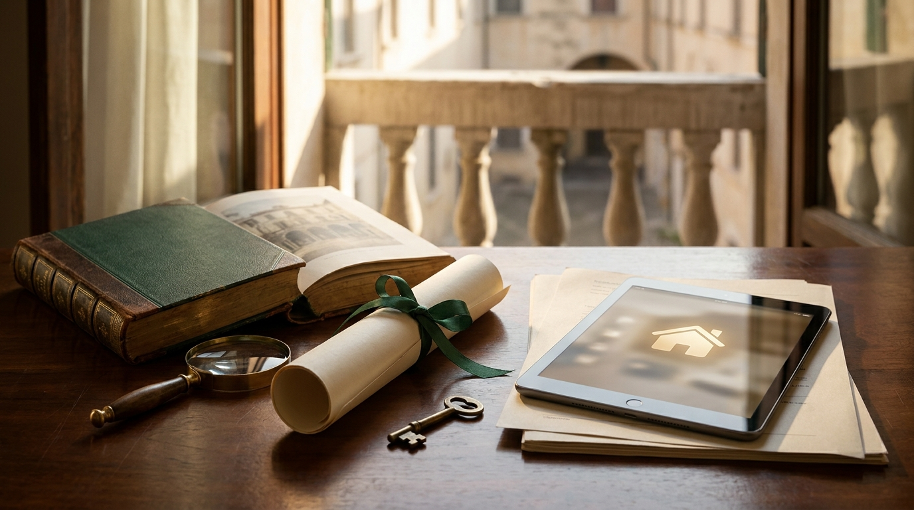

Smart home in condominio: i limiti della privacy
I dispositivi smart home — telecamere, videocitofoni, sensori connessi — semplificano la vita domestica ma possono riprendere spazi comuni e proprietà altrui. Quando ciò accade, il trattamento dei dati esce dalla sfera privata e ricade nel GDPR. Capire dove finisce l'uso domestico e dove iniziano gli obblighi verso i vicini è oggi decisivo per chi vive in condominio.

Il fatto e perché conta
Videocitofoni con registrazione, telecamere wi-fi, campanelli intelligenti: l'installazione di questi dispositivi è ormai diffusa anche negli edifici condominiali. Il problema sorge quando l'angolo di ripresa supera i confini della proprietà privata e intercetta il pianerottolo, l'ingresso del vicino, il cortile o la strada. In questi casi non si tratta più di una scelta libera del singolo: entrano in gioco le regole sulla protezione dei dati personali.
Inquadramento normativo
Il punto di partenza è l'art. 2, par. 2, lett. c) del Regolamento (UE) 2016/679 (GDPR), che esclude dall'applicazione del Regolamento i trattamenti svolti da una persona fisica per attività "a carattere esclusivamente personale o domestico". È la cosiddetta eccezione domestica.
Questa eccezione, però, ha confini stretti. La Corte di giustizia dell'Unione europea, nella sentenza Ryněš (C-212/13, 11 dicembre 2014), ha chiarito che la videosorveglianza che riprende, anche solo in parte, uno spazio pubblico o comune non rientra nell'attività domestica. In tal caso il titolare del trattamento è soggetto pieno agli obblighi del GDPR.
È qui che va distinta la posizione del condomino privato — che installa un dispositivo per la propria abitazione e ne risponde come titolare del trattamento — da quella del condominio, rappresentato dall'amministratore, quando l'impianto sorveglia le parti comuni. In quest'ultimo caso opera l'art. 1122-ter c.c., che subordina l'installazione di impianti di videosorveglianza sulle parti comuni a una delibera assembleare approvata con la maggioranza degli intervenuti che rappresenti almeno la metà del valore dell'edificio (500 millesimi).
Quando il GDPR si applica, la base giuridica più frequente è il legittimo interesse previsto dall'art. 6, par. 1, lett. f). Il suo utilizzo non è automatico: richiede un test di bilanciamento articolato in tre passaggi — verificare la sussistenza di una finalità legittima (es. sicurezza), la necessità del trattamento (assenza di mezzi meno invasivi) e la prevalenza dell'interesse del titolare sui diritti e le libertà degli interessati, cioè i vicini.
Implicazioni pratiche
Per chi installa una telecamera privata, il messaggio è chiaro: se l'obiettivo inquadra spazi non esclusivi, scattano gli obblighi del GDPR. Tra questi, la limitazione delle riprese al solo perimetro necessario, l'informativa visibile (cartello) e la corretta gestione dei tempi di conservazione delle immagini.
Sugli orientamenti del Garante per la protezione dei dati personali relativi alle riprese di spazi comuni, la conservazione delle immagini è di norma contenuta entro un arco breve (indicativamente 24-48 ore, salvo specifiche esigenze documentabili — il riferimento va verificato sulla fonte ufficiale di volta in volta applicabile).
Va inoltre considerato, con cautela e solo a titolo di ipotesi, che riprese invasive della vita privata altrui possono in astratto rilevare anche sul piano penale ai sensi dell'art. 615-bis c.p. (interferenze illecite nella vita privata). Si tratta di una fattispecie configurabile soltanto in presenza di precisi presupposti, da valutare caso per caso.
Cosa fare in concreto
- Delimitate l'angolo di ripresa. Orientate la telecamera esclusivamente verso la propria porta o proprietà; evitate di inquadrare pianerottoli, cortili o ingressi altrui.
- Esponete l'informativa. Affiggete un cartello visibile che segnali la presenza della videosorveglianza prima dell'area ripresa.
- Limitate la conservazione. Impostate la cancellazione automatica delle registrazioni entro tempi brevi, coerenti con gli orientamenti del Garante.
- Per le parti comuni, passate dall'assemblea. Gli impianti che sorvegliano spazi condominiali richiedono delibera ex art. 1122-ter c.c. con la maggioranza prevista.
- Verificate la base giuridica. Prima dell'installazione è opportuno accertare l'effettivo campo di ripresa e valutare il bilanciamento tra esigenze di sicurezza e diritti dei vicini, conservando traccia delle valutazioni svolte.
---
Contributo informativo a cura di Tamburro & Partners Avvocati. Non costituisce parere legale.
Ogni condominio ha una storia a sé.
Se gestisci un'amministrazione e vuoi un confronto su una specifica questione condominiale, scrivi allo studio. Ti rispondiamo entro un giorno lavorativo.